29 Color representations and metrics
Suggestions of all kinds for this book draft are welcome — whether it’s fixing small errors, raising bigger questions, or offering new perspectives. Please share comments through GitHub Issues. To make feedback easier to address, please point to the section you have in mind — by section number or a short snippet of text.
29.1 Color representations and metrics overview
Chapter 28 introduced the color-matching functions and the CIE \(\mathbf{XYZ}\) standard observer. The CMFs enable us to determine when two spectral power distributions match in appearance, and how a \(3 \times 3\) matrix calculation determines the display primary intensities needed to reproduce a target light.
However, color matching only tells us whether two lights look identical (\(\mathbf{C}\mathbf{t}_1 = \mathbf{C}\mathbf{t}_2\)). But it misses two important facts. First, the CMF calculation doesn’t tell us what the light looks like; is it red, yellow, blue? Second, when two lights do not match precisely the CMF calculation doesn’t tell us how large the perceptual difference will appear. These are important questions for image systems engineers.
This chapter introduces the tools used by engineers to visualize color gamuts and quantify visible color differences:
- Chromaticity coordinates for separating relative spectral composition from overall intensity and visualizing display gamuts in two dimensions.
- CIELAB (\(\Delta E_{ab}^*\)) for transforming linear tristimulus values into an approximately perceptually uniform space to measure large-field color differences.
- Spatial-CIELAB (S-CIELAB) for combining the spatial contrast sensitivity functions (Chapter 27) with CIELAB to predict the visibility of spatial-chromatic patterns such as halftones, color filter array artifacts, and display subpixels.
29.2 Chromaticity coordinates
When we describe the appearance of a light, it is natural to separate its overall brightness from its hue and saturation. When the CIE set up its standards in 1931, they wanted a method to communicate about color appearance based on the color-matching values. They proposed chromaticity coordinates (xy) for converting the three-dimensional CIE tristimulus values, \((X, Y, Z)\), into a two-dimensional representation that separates hue and saturation from intensity.
The xy coordinates are derived from the \((X,Y,Z)\) coordinates by scaling values by the sum of the coordinates.
\[ \begin{aligned} x &= \frac{X}{X + Y + Z}, \qquad y = \frac{Y}{X + Y + Z}, \\[6pt] z &= \frac{Z}{X + Y + Z} = 1 - x - y . \end{aligned} \tag{29.1}\]
This normalization means that two lights related by \((X_1,Y_1,Z_1) = k \times (X_2, Y_2, Z_2)\) will have the same xy values. The light intensity is normalized away.
We can visualize this mapping interactively using the three-dimensional rendering of the normalization plane and the spectrum locus in Figure 29.1.
The spectrum locus shown on the plane is fundamental because it forms the outer boundary of the chromaticity coordinates for all physical lights. This property follows directly from a geometric rule of chromaticity diagrams: the chromaticity of an additive mixture of two lights always lies on the straight line segment connecting their individual chromaticities (see Note 29.1). Because every physical light is a non-negative mixture of spectral lights, the chromaticity of any real light must lie inside the convex hull of the spectrum locus, bounded below by the straight “line of purples” connecting the short- and long-wavelength ends of the spectrum.
The approximate color appearance across the CIE 1931 \((x, y)\) chromaticity diagram is illustrated schematically in Figure 29.2. White and neutral grays fall near the center of the diagram. The saturated spectral lights lie along the outer boundary.
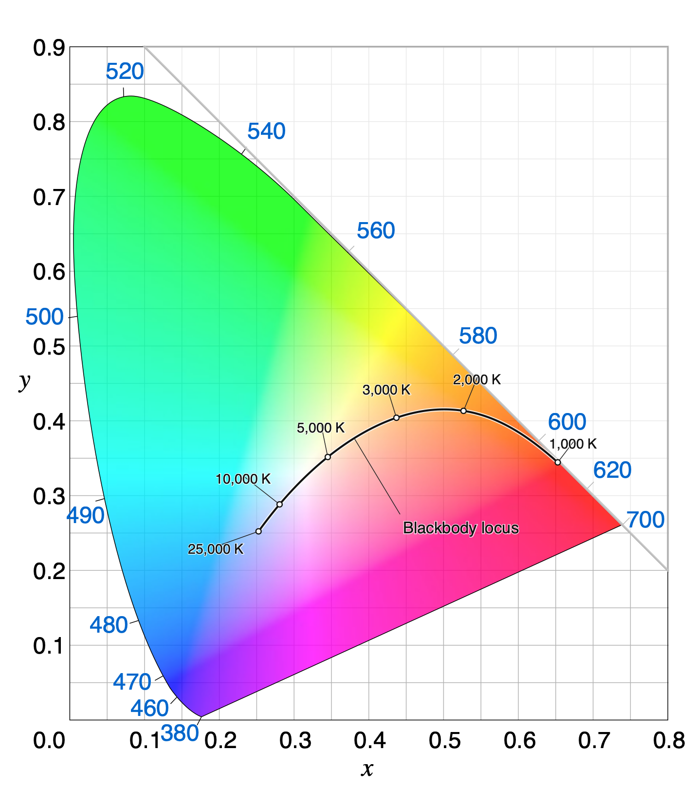
The chromaticity coordinate of an additive mixture of two lights lies on the straight line segment connecting their chromaticities.
Suppose Light 1 and Light 2 have CIE tristimulus vectors \(\mathbf{C}_1 = (X_1, Y_1, Z_1)\) and \(\mathbf{C}_2 = (X_2, Y_2, Z_2)\), with coordinate sums
\[ S_1 = X_1 + Y_1 + Z_1 \quad \text{and} \quad S_2 = X_2 + Y_2 + Z_2 . \]
From Equation 29.1, the 2D chromaticity coordinates \(\mathbf{c}_1 = (x_1, y_1)\) and \(\mathbf{c}_2 = (x_2, y_2)\) satisfy
\[ (X_1, Y_1) = S_1 (x_1, y_1) \quad \text{and} \quad (X_2, Y_2) = S_2 (x_2, y_2) . \]
By superposition, mixing the two lights sums their tristimulus vectors:
\[ \mathbf{C}_3 = (X_1 + X_2, \; Y_1 + Y_2, \; Z_1 + Z_2) . \]
The coordinate sum of the mixture is \(S_3 = S_1 + S_2\), so the chromaticity of the mixture \(\mathbf{c}_3 = (x_3, y_3)\) is
\[ \begin{aligned} x_3 &= \frac{X_1 + X_2}{S_1 + S_2} = \frac{S_1 x_1 + S_2 x_2}{S_1 + S_2} = \left(\frac{S_1}{S_1 + S_2}\right) x_1 + \left(\frac{S_2}{S_1 + S_2}\right) x_2 , \\ y_3 &= \frac{Y_1 + Y_2}{S_1 + S_2} = \frac{S_1 y_1 + S_2 y_2}{S_1 + S_2} = \left(\frac{S_1}{S_1 + S_2}\right) y_1 + \left(\frac{S_2}{S_1 + S_2}\right) y_2 . \end{aligned} \]
Defining \(\alpha = \frac{S_1}{S_1 + S_2}\), we see that \(1 - \alpha = \frac{S_2}{S_1 + S_2}\), with \(0 < \alpha < 1\) whenever \(S_1, S_2 > 0\). In vector form, the chromaticity of the mixture is a convex combination of \(\mathbf{c}_1\) and \(\mathbf{c}_2\):
\[ \mathbf{c}_3 = \alpha \mathbf{c}_1 + (1 - \alpha) \mathbf{c}_2 . \]
As the relative intensities of the two lights vary, \(\mathbf{c}_3\) sweeps out the line segment connecting \(\mathbf{c}_1\) and \(\mathbf{c}_2\) in the \((x, y)\) chromaticity diagram.
29.2.1 Common terms associated with the chromaticity diagram
We plot these values by projecting the plane orthographically onto the \((x, y)\) axes. This produces the standard two-dimensional CIE \((x, y)\) chromaticity diagram (Figure 29.2). Several classic colorimetric concepts and engineering tools are described on the chromaticity diagram.
Blackbody (Planckian) locus As the temperature of a blackbody radiator increases from \(2000\text{ K}\) to \(9000\text{ K}\), its spectral power distribution shifts toward shorter wavelengths, tracing a smooth arc from orange-red through neutral white to bluish-white near the center of the chromaticity diagram (Figure 29.2).
Complementary wavelengths are defined as a pair of monochromatic lights whose additive mixture can match a chosen reference white (such as CIE D65; Figure 29.3 (a)). Dominant wavelength is defined by a ray from the reference white point through a test light’s chromaticity out to the spectrum locus (Figure 29.3 (b)). The fractional distance along the segment from white to the boundary quantifies the excitation purity.
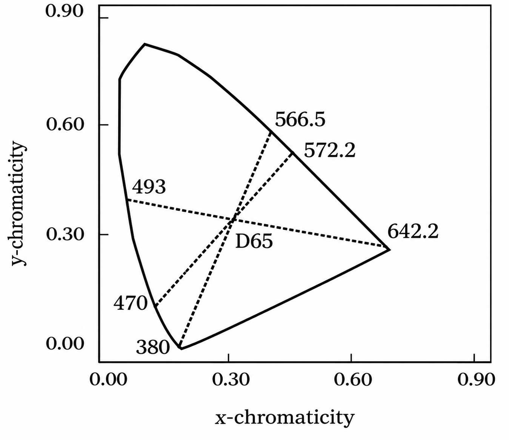
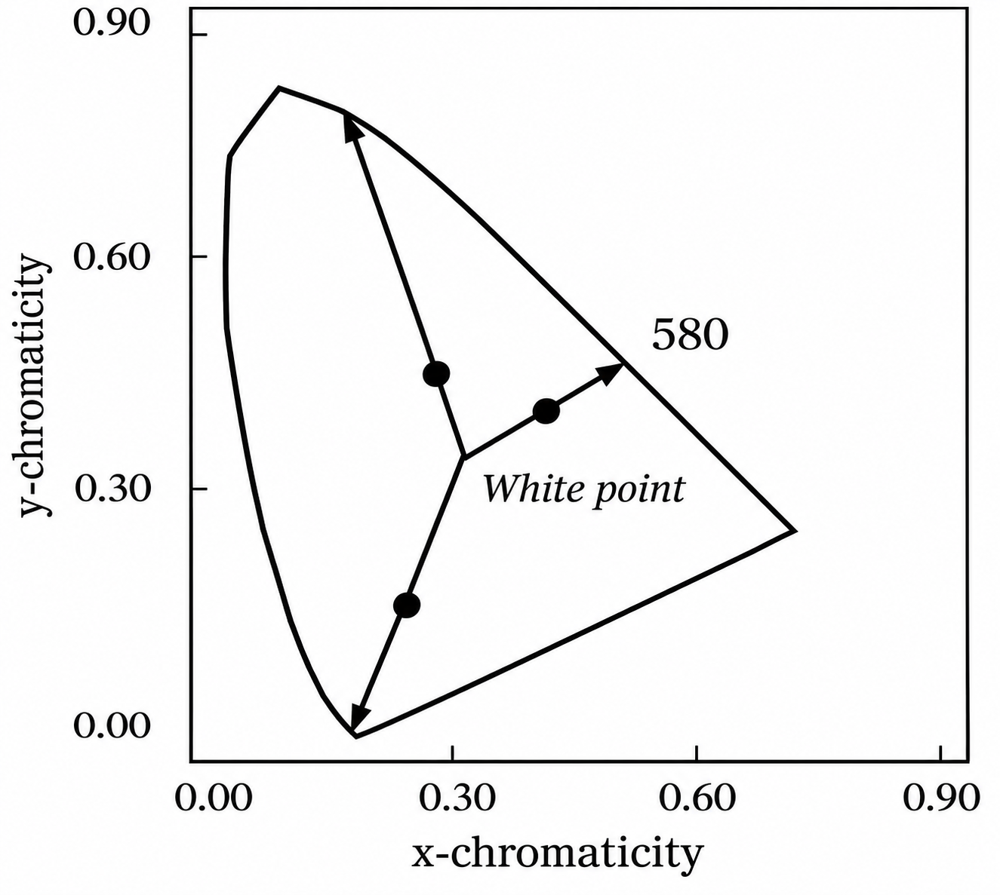
29.2.2 Display gamuts
One of the most common and practical uses of chromaticity coordinates is to visualize the range of colors a display can produce (Section 28.6). The two-dimensional chromaticity gamut follows directly from the two-light mixture rule (Note 29.1): any non-negative additive combination of three primary lights (\(R\), \(G\), and \(B\)) lies inside the triangle whose vertices are the chromaticities of the three primaries (Figure 29.4 (a)).
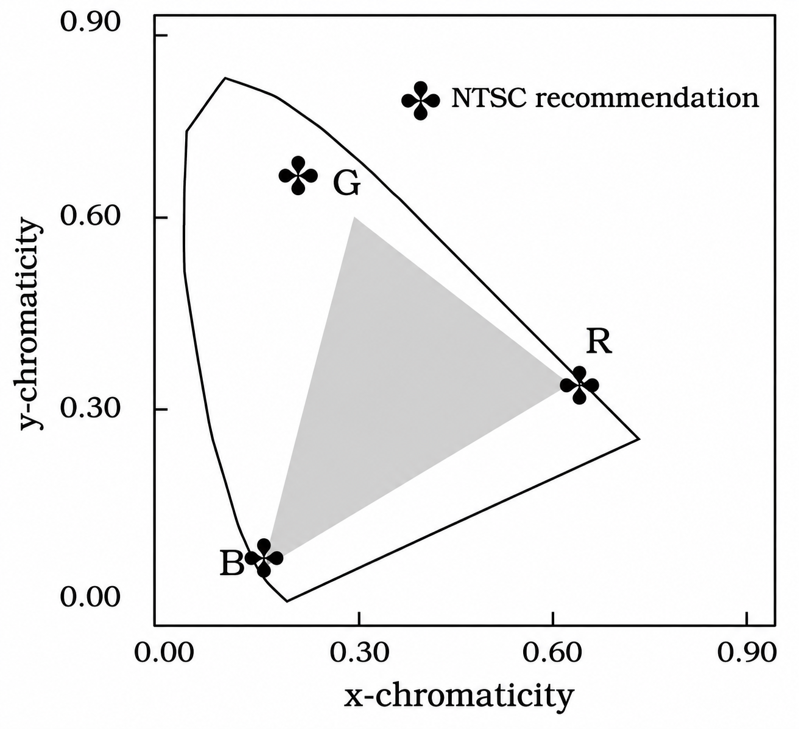
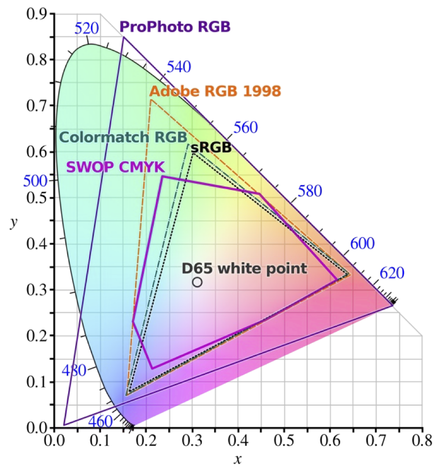
Any chromaticity inside the triangle defined by the three primaries can be reproduced by the display; any chromaticity outside the triangle would require a negative weight on at least one primary (Equation 28.7) and is out of gamut. Keep two caveats in mind when interpreting these chromaticity triangles:
- Chromaticity omits luminance. The \((x, y)\) triangle is a two-dimensional projection of the three-dimensional color solid swept out over the valid range of primary intensities. The projection does not show how the range of achievable chromaticities shrinks near the display’s peak luminance (where primaries saturate) or near its black level (where ambient flare and dark light dominate).
- Displays have primary gamuts; sensors do not. While a three-primary display is physically restricted to the convex triangle of its emitters (Figure 29.4 (b)), a camera sensor does not emit primaries—it is designed to respond to light across the visible spectrum. People sometimes use the phrase “sensor gamut,” which has never seemed like a good idea to me. The meaningful engineering question for a sensor is how accurately its responses can be transformed into the human visual encoding—a topic we return to later.
29.3 Representing perceptual differences
Almost right away, engineers noted that the \((x, y)\) diagram has an important practical shortcoming: equal distances on the chart do not correspond to equal perceptual differences. A large upper region of the \((x, y)\) diagram appears green with relatively little change in perceived hue across long distances, whereas in the blue and purple regions a small step produces a large change in color appearance (Figure 29.2).
This was demonstrated in a very compelling set of measurements from Kodak Laboratories as part of a large color research program led by David MacAdam (MacAdam 1942). His experimental measurements included an analysis of how discriminable colors were from one another. He made his measurements in the constant-Y plane (equiluminance). The participants made multiple matches to a target, and MacAdam used the standard deviation of the settings in different directions within the plane to define an ellipse. This ellipse measures the equal-discriminability of the lights in the plane. The shape and size of these ellipses, now called the MacAdam ellipses, differ greatly between different positions in the plane.
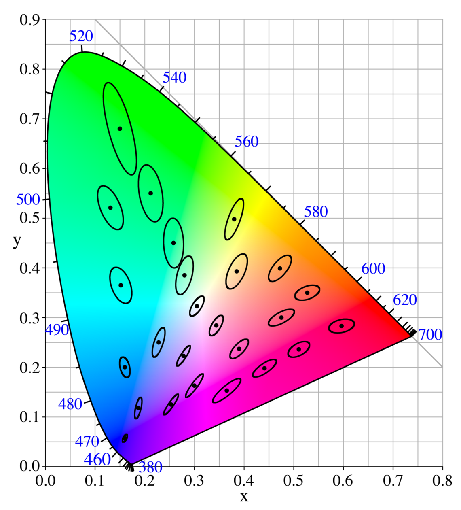
29.3.1 \((u', v')\) chromaticity coordinates
The size and orientation of the MacAdam ellipses vary greatly with chromaticity, being especially large in the green region of the chromaticity diagram (Figure 29.5). In response to this shortcoming, alternative chromaticity coordinates were proposed with the goal of making a representation whose differences are more perceptually equal.
The CIE 1976 \((u', v')\) Uniform Chromaticity Scale (UCS) diagram2 is an influential alternative to \((x, y)\). Equation 29.2 is also a projective mapping, but in this case we measure how each ray intersects the plane \(X + 15Y + 3Z = 1\). Also, notice that the projection onto the \((u', v')\) plane is followed by axis scale factors of \(4\) and \(9\) (Figure 29.6). Differences in these coordinates are more closely matched to perceptual differences. The formula for \(u'\) and \(v'\) is
\[ u' = \frac{4X}{X + 15Y + 3Z}, \qquad v' = \frac{9Y}{X + 15Y + 3Z} . \tag{29.2}\]
You can rotate and inspect the \((u', v')\) normalization plane \(X + 15Y + 3Z = 1\) and its spectrum locus in three dimensions in Figure 29.6.
Figure 29.7 provides a sense of the color appearance at different locations in the \((u',v')\) plane, along with the position of the blackbody locus.
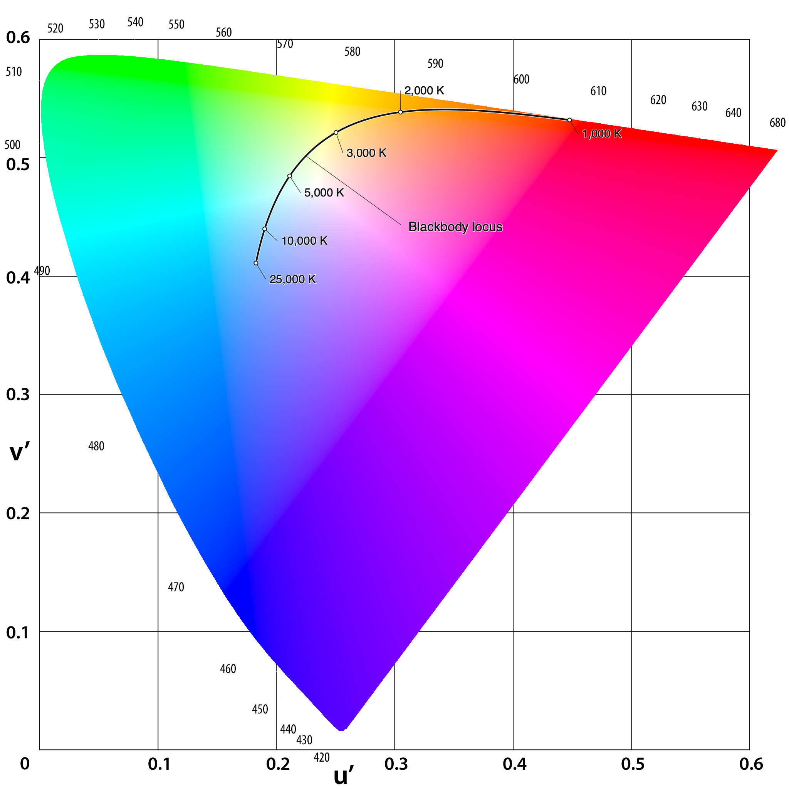
Because this mapping is still a central projection onto a plane, additive mixtures of lights continue to lie on straight line segments, and display gamuts remain triangles.
Both chromaticity representations discard luminance, which is an important feature of the light. When describing a light, it is common to inform users about luminance by including the \(Y\) value. Thus, you will often see people describing a light with three values, \(Yxy\) or \(Yu'v'\). It is straightforward to convert those three values to recover the \((X,Y,Z)\) values.
29.4 CIELAB
There are two shortcomings we would like to address concerning the chromaticity representations.
First, the \((u', v')\) improves the uniformity of two-dimensional chromaticity spacing, but it remains a two-dimensional measure of a three-dimensional signal. To quantify the full perceptual difference between two lights - which will generally differ in both luminance and chromaticity - we need to expand the metric to include all three dimensions.
Second, the human visual adjusts its properties substantially as it changes between contexts, say from inside a room to outside in the sun. These adjustments - often called light- and dark-adaptation - substantially change visual sensitivity and thus have a big impact on how well we can discriminate between different lights.
In 1976 the CIE completed work on the color metrics that address these two issues. The metrics account for all three dimensions, and they include parameters about the ambient viewing conditions which determine the likely state of adaptation.
The CIE committee members could not come to an agreement on a single metric, and they approved two standard discrimination metrics: CIELUV and CIELAB. The CIELUV metric is an extension of the \((u',v')\) system, and it was favored by key individuals (Günther Wyszecki) who wanted the new system to preserve a projective chromaticity diagram while accounting for the ambient white point \((X_n, Y_n, Z_n)\):
\[ \begin{aligned} L^* &= \begin{cases} 116 \left(\frac{Y}{Y_n}\right)^{1/3} - 16, & \frac{Y}{Y_n} > \left(\frac{6}{29}\right)^3 \approx 0.008856, \\[6pt] \left(\frac{29}{3}\right)^3 \frac{Y}{Y_n} \approx 903.3\,\frac{Y}{Y_n}, & \frac{Y}{Y_n} \le \left(\frac{6}{29}\right)^3, \end{cases} \\[8pt] u^* &= 13\, L^* (u' - u'_n), \\[4pt] v^* &= 13\, L^* (v' - v'_n), \end{aligned} \tag{29.3}\]
where \((u'_n, v'_n)\) are the \((u', v')\) chromaticity coordinates of the reference white point from Equation 29.2, and the perceptual color difference between two lights is the Euclidean distance \(\Delta E^*_{uv} = \sqrt{(\Delta L^*)^2 + (\Delta u^*)^2 + (\Delta v^*)^2}\).
The ambient white point values are the \(u'_n,v'_n\) chromaticity coordinates and \(Y_n\) value of a white reflective surface under the ambient illumination conditions. These values provide information about the viewer’s likely state of adaptation, and the CIELUV values \((L^*,u^*,v^*)\) are all specified in terms of the white point values.
Another group—including R. W. G. (Bob) Hunt and researchers in the surface-color and textile industries—favored the CIELAB formula, which simplified the earlier Adams–Nickerson opponent-color space developed by Elliot Q. Adams and Dorothy Nickerson. Rather than preserving a projective chromaticity diagram, CIELAB normalizes each tristimulus value \((X, Y, Z)\) directly by the ambient white point \((X_n, Y_n, Z_n)\) and applies a compressive nonlinearity before taking opponent differences:
\[ \begin{aligned} L^* &= 116\, f\!\left(\frac{Y}{Y_n}\right) - 16, \\[6pt] a^* &= 500 \left[ f\!\left(\frac{X}{X_n}\right) - f\!\left(\frac{Y}{Y_n}\right) \right], \\[6pt] b^* &= 200 \left[ f\!\left(\frac{Y}{Y_n}\right) - f\!\left(\frac{Z}{Z_n}\right) \right], \end{aligned} \tag{29.4}\]
where the piecewise compressive function \(f(t)\) is
\[ f(t) = \begin{cases} t^{1/3}, & t > \left(\frac{6}{29}\right)^3 \approx 0.008856, \\[6pt] \frac{1}{3}\left(\frac{29}{6}\right)^2 t + \frac{4}{29} \approx 7.787\,t + \frac{16}{116}, & t \le \left(\frac{6}{29}\right)^3 . \end{cases} \tag{29.5}\]
Notice that \(L^*\) in Equation 29.4 is identical to \(L^*\) in Equation 29.3.
29.4.1 Color appearance
The three dimensions of the CIELAB representation correspond to three intuitive variables. The \(L^*\) variable describes the lightness, running from black (\(0\)) to a white surface (\(100\)). The \(a^*\) dimension runs between very red (positive) to neutral to very green (negative). The \(b^*\) dimension runs from very yellow (positive) to neutral to very blue (negative).
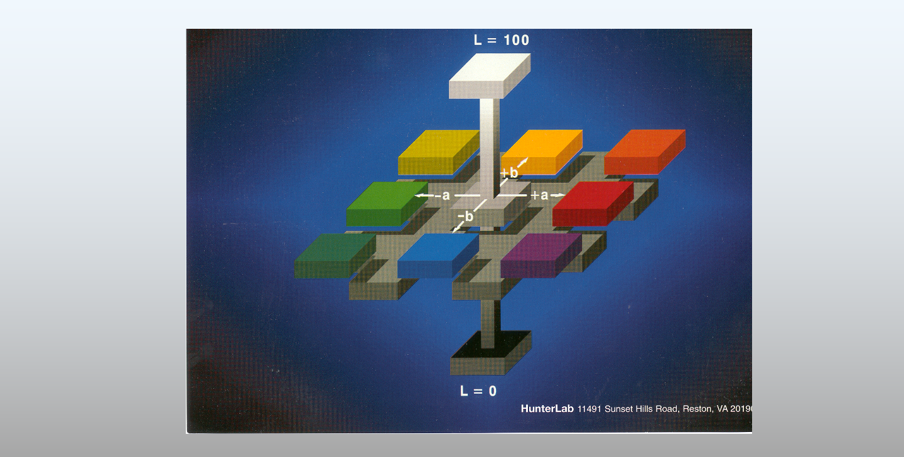
This organization of surface colors builds directly on the system introduced in 1905 by the American painter and art teacher Albert H. Munsell (A Color Notation). Seeking a “rational way to describe color” for students and artisans—analogous to musical notation—Munsell combined visual scaling judgments with photometric measurements to arrange painted samples into perceptually uniform steps. He published these in his Atlas of the Munsell Color System (1915), which evolved into the Munsell Book of Color (1929) and remains widely used in design, manufacturing, and color science.
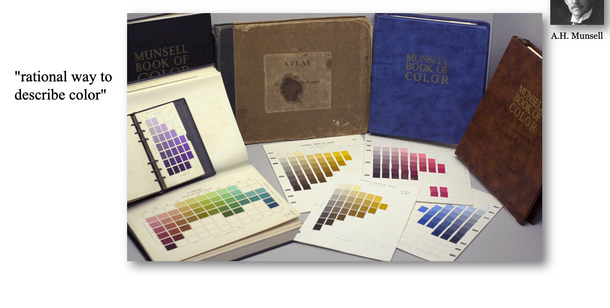
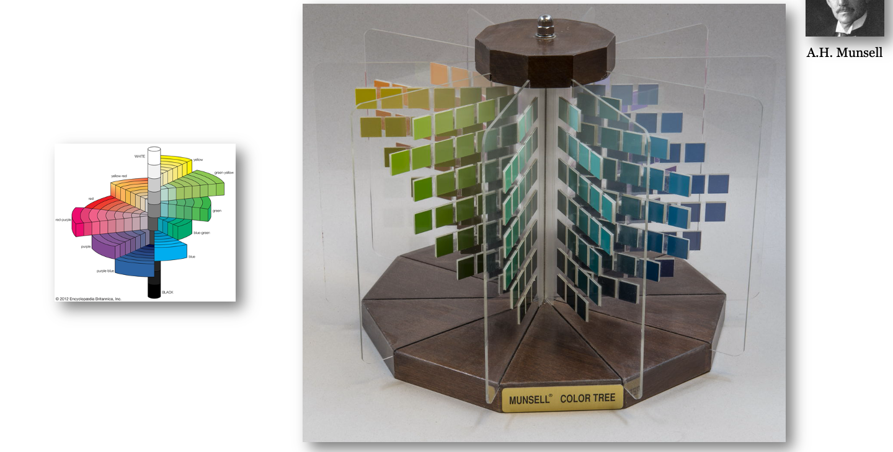
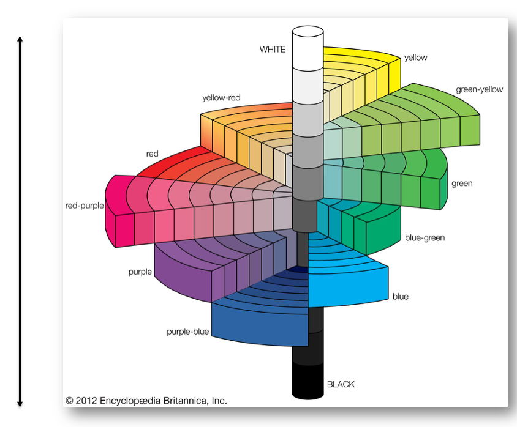
Hue Value/Chroma notation—for example, 2.5YR 5/10 denotes a yellow-red hue, mid-level lightness (\(5\)), and a chroma of \(10\). Unlike value, chroma is open-ended and varies by hue and lightness (the asymmetric shape of the Color Tree reflects the different maximum chromas attainable with real pigments). While Munsell steps are designed to be perceptually uniform, the notation describes appearance rather than a linear light-mixing space, so you cannot add two Munsell coordinates to predict an additive mixture the way you can with CIE \((X, Y, Z)\).
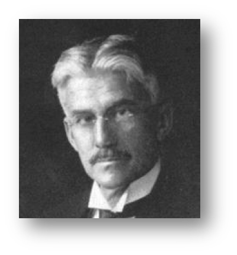
As the Munsell system gained wide adoption in industry, art, and science, the Optical Society of America (now Optica) formed a Subcommittee on the Spacing of the Munsell Colors—led by Sidney M. Newhall, Dorothy Nickerson, and Deane B. Judd—to evaluate and refine its perceptual uniformity. Between 1937 and 1943, the committee combined spectrophotometric measurements of the 1929 Munsell Book of Color chips under CIE Illuminant C with millions of visual judgments to smooth and adjust the spacing of hue, value, and chroma in CIE \((x, y, Y)\) space.
The resulting Munsell Renotation System (1943) published idealized CIE \((x, y, Y)\) coordinates for every Munsell notation, turning a physical collection of painted chips into a quantitative colorimetric standard tied directly to CIE \(\mathbf{XYZ}\). The Munsell Color Company then reformulated its chips to match the renotation targets, and later spectrophotometric surveys (Nickerson 1957; Parkkinen et al. 1989) made the full spectral reflectance curves of Munsell chips a standard dataset in color and imaging science.
29.4.2 Color difference metric: \(\Delta E\)
A key objective for the CIELAB and CIELUV representations is to define a perceptual difference between two lights, based on the Euclidean distance. They use the symbol \(\Delta E\) to denote the Euclidean difference; a subscript indicates which system is used. For example, \[ \Delta E^*_{ab} = \sqrt{(\Delta L^*)^2 + (\Delta a^*)^2 + (\Delta b^*)^2} \tag{29.6}\]
The two representations are similar, but not the same. We can judge the similarity by plotting an equal-difference contour (a circle) in one space (CIELAB) in the other space (CIELUV). We can also transform a rectangular grid in CIELAB space into its representation in CIELUV space. The interactive plots in Figure 29.11 provide a sense of how these two representations differ.
The CIELAB representation is more widely used than CIELUV, and it has been extended and amended in various ways. CIELUV is primarily used by display and lighting engineering because it preserves the projective \((u', v')\) chromaticity diagram. CIELAB and CIEDE2000 dominate perceptual color-difference evaluation in many fields.
Two lines of evidence show how CIELAB became the dominant CIE color-difference standard over CIELUV:
Scholarly usage: A search of the OpenAlex scholarly literature database (November 2026) illustrates the gap in adoption across imaging, printing, textiles, and vision science:
| Term | Matching Works |
|---|---|
"CIELAB" |
46,499 |
"CIELUV" |
1,893 |
"CIEDE2000" |
5,513 |
"CIE94" |
605 |
"CIELAB" appears roughly 25× more often than "CIELUV", and "CIEDE2000" alone appears nearly 3× more often than "CIELUV".
These later CIE standards leave the \((L^*, a^*, b^*)\) coordinate representation itself intact and change only how color differences (\(\Delta E\)) are computed.
One modification to CIELAB, made in CIE94 Added chroma- and hue-dependent weighting functions to correct CIELAB’s overestimation of perceptual differences at high chroma (\(\Delta E^*_{94}\), CIE 116-1995). Rather than measuring simple Euclidean distance in \((L^*, a^*, b^*)\), they convert differences into cylindrical lightness, chroma, and hue coordinates \((L^*, C^*_{ab}, h_{ab})\) and apply a weighted, position-dependent quadratic distance (so \(\Delta E\) is no longer a global Euclidean metric in a transformed 3D space):
The next modificiation, made in CIEDE2000 Added lightness, chroma, and hue weighting functions (\(S_L, S_C, S_H\)), a chroma–hue interaction rotation term (\(R_T\)) in the blue region, and a rescaling of \(a^*\) near neutral grays (\(\Delta E_{00}\), CIE 142-2001; ISO/CIE 11664-6).
29.5 Spatial-CIELAB (S-CIELAB)
The CIELAB metric was established based on measurements with relatively large ( > 2 deg of visual angle), uniform patches. This is an important application, and it was the dominant commercial application in the 1970s. With the rise of color displays - and yes, kids, there were many centuries in which we did not have color displays - there was an increasing need to make comparisons between natural images that contain textures and many spatial contrast variations. The CIE metrics were not designed to compare natural images, or really patterned images at all.
s_colorCielabSweep.m. Use the zoom controls or double-click in the HTML version to inspect the high-frequency edges.
Psychophysical investigations have provided a clear principle about how one might extend CIELAB to account for differences between spatially complex images. Some of these principles arise naturally from our understanding of human optics and retinal sampling. We have seen that chromatic aberration in the optics blurs the short wavelength components of the retinal irradiance, and the S-cone sampling mosaic has reduced spatial density that approximately matches this blur. Thus, any color metric that accounts for color should ignore high frequency differences in the short wavelength signal; even when present, such differences will not be encoded by the eye. Similarly, there is better spatial resolution and sensitivity to luminance variations in the green spectral region than the red spectral region.
Zhang et al. (1996)
Explain why CIELAB alone is insufficient for patterned images (depends on viewing distance and spatial frequency).
Show the S-CIELAB architecture (Zhang & Wandell, 1997):
- Transform image into opponent-color channels (luminance, red-green, blue-yellow).
- Filter each channel by its corresponding spatial Contrast Sensitivity Function (CSF) scaled for viewing distance (cycles per degree).
- Transform the filtered representation back to CIE XYZ and compute point-by-point CIELAB Delta E. Bridge forward to Part V (Displays), where CIELAB and S-CIELAB are used to evaluate display bit-depth and subpixel rendering (Chapter 30). –>
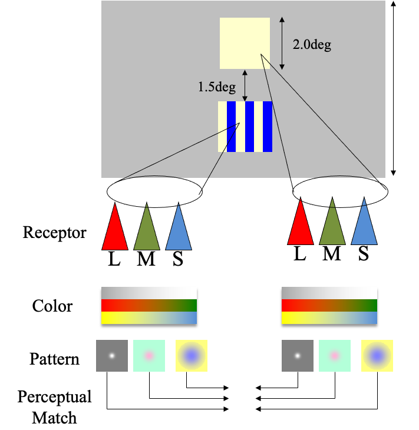
More
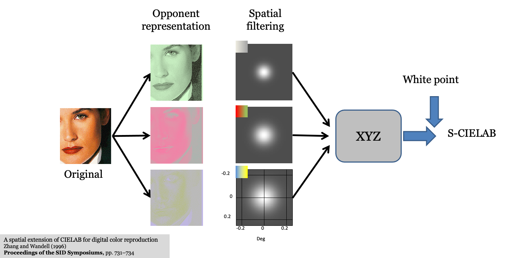
From the acknowledgements in MacAdam (1942): “It is a pleasure to acknowledge again the essential contributions of Mr. Perley G. Nutting, Jr., whose critical interest in the ideas involved in this research was much greater and more helpful than is implied by the fact that he was the principal observer.”↩︎
The 1976 UCS is an improvement upon an earlier CIE 1960 UCS definition, \(u = u'\) and \(v = \frac{2}{3}v' = \frac{6Y}{X + 15Y + 3Z}\).↩︎